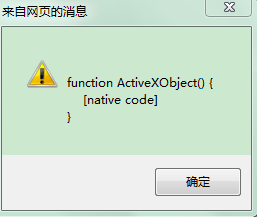
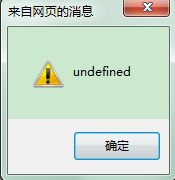
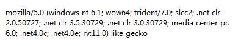

_javascript技巧_脚本之家_files/m.jb51.net.png)
_javascript技巧_脚本之家_files/newn.gif)
_javascript技巧_脚本之家_files/shouji_jbbc.jpg)
_javascript技巧_脚本之家_files/ali1000.png)
_javascript技巧_脚本之家_files/xinghaivps.gif)
判断是否IE浏览器用的是window.navigator.userAgent，跟踪这个信息，发现在开发环境，识别为IE10，但访问服务器则识别为IE11，但IE11的userAgent里是没有MSIE标志的，原因就是这个了。
把判断IE浏览器的方法改成如下就可以了。
1 2 3 4 5 6 | function isIE() { //ie? if (!!window.ActiveXObject || "ActiveXObject" in window) return true; else return false; } |
下面是一些分享，大家可以看下，很实用的分析解说
在很多时候，我们一般采用navigator.userAgent和正则表达来判断IE浏览器版本，下面介绍用IE浏览器中不同特性来判断IE浏览器
1 判断IE浏览器与非IE 浏览器
IE浏览器与非IE浏览器的区别是IE浏览器支持ActiveXObject，但是非IE浏览器不支持ActiveXObject。在IE11浏览器还没出现的时候我们判断IE和非IE经常是这么写的
1 2 3 | function isIe(){ return window.ActiveXObject ? true : false; } |
但是在IE11中上面判断的返回的是false，我自己在IE11测试了下如下代码
alert(window.ActiveXObject);
alert(typeof window.ActiveXObject);
结果是


这是为什么呢？明明ActiveXObject是存在的，怎么就typeof的结果确实undefined。哪位知道结果的告诉我这是为什么呢？为神马？
微软上的官网说出了IE11的ActiveXObject的不同。http://msdn.microsoft.com/en-us/library/ie/dn423948%28v=vs.85%29.aspx。但是并没有解释typeof的原因。如果我们用下面的代码来检测是可以的
alert("ActiveXObject" in window)//在ie11下返回的是false
这是我又不明白了"ActiveXObject" in window返回的是true，为什么以前判断IE浏览器的代码在IE11中返回的是false？再次求大牛们给个解释。谢谢
下面就直接给出兼容IE11判断IE与非IE浏览器的方法。
1 2 3 | function isIe(){ return ("ActiveXObject" in window); } |
注意前提条件是我们的程序代码中不要覆盖ActiveXObject,应该没有哪个程序这么做吧。呵呵。
2 判断IE6浏览器
从IE7开始IE是支持XMLHttpRequest对象的，唯独IE6是不支持的。根据这个特性和前面判断IE的函数isIe()我们就知道怎么判断IE6了吧。判断方法如下
1 2 3 4 | function isIe6() { // ie6是不支持window.XMLHttpRequest的 return isIe() && !window.XMLHttpRequest; } |
3 判断IE7浏览器
因为从IE8开始是支持文档模式的，它支持document.documentMode。IE7是不支持的，但是IE7是支持XMLHttpRequest对象的。判断方法如下
1 2 3 4 | function isIe7() { //只有IE8+才支持document.documentMode return isIe() && window.XMLHttpRequest && !document.documentMode; } |
4 判断IE8浏览器
在从IE9开始，微软慢慢的靠近标准,我们把IE678称为非标准浏览器，IE9+与其他如chrome,firefox浏览器称为标准浏览器。两者的区别其中有一个是。大家测试下如下代码。返回的是什么
alert(-[1,]);//在IE678中打印的是NaN,但是在标准浏览器打印的是-1
那么我们就可以根据上面的区别来判断是IE8浏览器。方法如下
1 2 3 4 | function isIe8(){ // alert(!-[1,])//->IE678返回NaN 所以!NaN为true 标准浏览器返回-1 所以!-1为false return isIe() &&!-[1,]&&document.documentMode;} |
5 判断IE9、IE10、IE11浏览器
从IE8浏览器是支持JSON内置对象的，从IE10开始支持js的严格模式，关于JS中的严格模式请参考这篇文章http://www.jb51.net/article/75037.htm
IE9+下alert(!-[1,])返回的是false,IE9+是支持addEventListener的，但是IE11浏览器中是不支持原来IE中独有的事件绑定attachEvent。根据这些区别我们就能区分出IE9、IE10、IE11浏览器了。
6 判断其他浏览器
1 2 3 4 5 6 7 8 9 10 11 12 13 14 15 16 17 18 19 20 21 22 23 24 25 26 27 28 29 30 31 32 33 34 35 36 37 38 | /****来自曾经项目中封装的公共类函数***///检测函数var check = function(r) { return r.test(navigator.userAgent.toLowerCase()); };var statics = { /** * 是否为webkit内核的浏览器 */ isWebkit : function() { return check(/webkit/); }, /** * 是否为火狐浏览器 */ isFirefox : function() { return check(/firefox/); }, /** * 是否为谷歌浏览器 */ isChrome : function() { return !statics.isOpera() && check(/chrome/); }, /** * 是否为Opera浏览器 */ isOpera : function() { return check(/opr/); }, /** * 检测是否为Safari浏览器 */ isSafari : function() { // google chrome浏览器中也包含了safari return !statics.isChrome() && !statics.isOpera() && check(/safari/); }}; |
js如何判断IE浏览器的版本包括IE11
1 2 3 4 5 6 7 8 9 10 11 12 13 14 15 16 17 18 19 20 21 22 23 24 25 26 27 28 29 30 31 32 33 34 35 36 37 38 39 40 41 42 43 44 45 46 47 48 49 50 51 52 53 54 | <!DOCTYPE html><html><head><meta charset=" utf-8"><title>脚本之家</title><script type="text/javascript">var userAgent = navigator.userAgent, rMsie = /(msie\s|trident.*rv:)([\w.]+)/, rFirefox = /(firefox)\/([\w.]+)/, rOpera = /(opera).+version\/([\w.]+)/, rChrome = /(chrome)\/([\w.]+)/, rSafari = /version\/([\w.]+).*(safari)/; var browser; var version; var ua = userAgent.toLowerCase(); function uaMatch(ua){ var match = rMsie.exec(ua); if(match != null){ return { browser : "IE", version : match[2] || "0" }; } var match = rFirefox.exec(ua); if (match != null) { return { browser : match[1] || "", version : match[2] || "0" }; } var match = rOpera.exec(ua); if (match != null) { return { browser : match[1] || "", version : match[2] || "0" }; } var match = rChrome.exec(ua); if (match != null) { return { browser : match[1] || "", version : match[2] || "0" }; } var match = rSafari.exec(ua); if (match != null) { return { browser : match[2] || "", version : match[1] || "0" }; } if (match != null) { return { browser : "", version : "0" }; } } var browserMatch = uaMatch(userAgent.toLowerCase()); if (browserMatch.browser){ browser = browserMatch.browser; version = browserMatch.version; } document.write(browser+version); </script></script></head><body> </body></html> |
上面的代码实现了判断功能，下面介绍一下它的实现原理，希望能够给需要的朋友带来帮助。
先来看一段代码:
navigator.userAgent
IE11下的信息截图:

然后使用相应的正则表达式进行匹配。IE11和以前版本的浏览器还是有较大差别的，以前的版本，这个信息中包含msie，IE11中没有了，新增加trident，后面跟着浏览器的版本号码，这一点要特别注意一下。
如对本文有疑问，请提交到交流社区，广大热心网友会为你解答！！ 点击进入社区
_javascript技巧_脚本之家_files/ali_300_1.jpg)
_javascript技巧_脚本之家_files/tmtb.png)
_javascript技巧_脚本之家_files/tengyou300.gif)
_javascript技巧_脚本之家_files/enkj300.gif)
最新评论